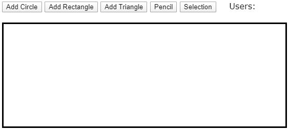
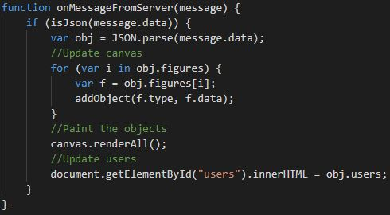

El proyecto consiste en una aplicación de dibujo colaborativo con WebSockets. Esta aplicación consta de:
Servidor: encargado de gestionar las conexiones de los distintos usuarios y los dibujos que estos van añadiendo al canvas.
Cliente: permite a los usuarios conectarse al servidor, recibir los contenidos que hay dibujados hasta ese momento en el canvas (en este caso figuras -círculo, triángulo y rectángulo-) y colaborar en el dibujo.
Desarrollo
Para desarrollar tanto el cliente como el servidor se ha utilizado Visual Studio Code. Adicionalmente, se ha utilizado Node.js para instalar y ejecutar el servidor.
Para instalar el servidor se ha creado la carpeta DrawingServer y desde la consola de Node.js se ha accedido a ella y se ha ejecutado el comando npm init.
Instalación del servidor con Node.js
Desarrollo del servidor
Tras instalar el servidor en Node.js, se ha creado el fichero server.js dentro de la carpeta DrawingServer.
Este fichero contiene la implementación del servidor, es decir, las variables y funciones necesarias para que éste realice su funcionalidad.
En cuanto a las variables, se guardan los usuarios que se conectan al servidor, así como las figuras que éstos crean en el canvas.
Respecto a las funciones, a continuación se explican las que se consideran más importantes.
La función incoming se ejecuta cuando el servidor recibe un mensaje de un cliente y se encarga de comprobar el tipo de mensaje que llega (plano o JSON).
En el caso de que llegue un objeto JSON (una figura), se guarda ésta en la lista de figuras.
La función broadcast es llamada por la función anterior (incoming).
Esta función es la encargada de enviar a los usuarios los datos actualizados, es decir, el número de usuarios que se encuentran conectados al servidor y las figuras
que forman parte del dibujo en el que todos ellos están colaborando.
En el caso de que se haya conectado un nuevo usuario:
Se le envían todas las figuras creadas hasta el momento en el dibujo.
Se le notifica al resto de usuarios de su presencia.
En el caso de que un usuario haya añadido una nueva figura, se envía ésta al resto de los usuarios.
Para desarrollar el cliente se ha utilizado HTML, CSS y Javascript. Por tanto, el proyecto está formado por tres ficheros:
Index.html: fichero HTML que representa la vista del cliente (canvas y botones para crear figuras).
Se ha utilizado la librería Fabric.js (Javascript Canvas Library) para crear el
canvas y las figuras (círculo, rectángulo y triángulo) que se pueden dibujar en él.

Vista del clienteCódigo de la vista del cliente
Style.css: fichero CSS que contiene los estilos que se aplican a los elementos del fichero HTML.
Script.js: fichero Javascript donde se encuentra la implementación (lógica) del cliente, es decir, las funciones necesarias para
crear las figuras, comunicarse con el servidor, etc.
A continuación, se explican las funciones más importantes del fichero script.js.
La función onMessageFromServer se ejecuta cuando el cliente recibe un mensaje del servidor. Esta función actualiza el número de usuarios y/o
los objetos del canvas.

Cliente - Función onMessageFromServer
La función addObject es llamada por la función onMessageFromServer y se encarga de crear, a través de la librería Fabric.js, la figura
correspondiente en función del tipo que recibe por parámetro.
Cliente - Función addObject
Ejecución
Para poder ejecutar la aplicación es necesario arrancar el servidor y ejecutar uno o varios clientes.
Por un lado, para arrancar el servidor, se debe ejecutar la consola de Node.js y acceder a la ruta del servidor. Una vez ahí, se debe ejecutar el comando node server.js.
Por otro lado, para ejecutar el cliente, se debe abrir el fichero index.html en el navegador Google Chrome. En el caso de que se necesite ejecutar más de un cliente,
se deben abrir en el navegador tantas pestañas como clientes se deseen.
Despliegue
El código de esta aplicación se puede encontrar en el GitHub de la autora, así como el código
del servidor y del cliente.
Adicionalmente, se ha creado una presentación (resumen de esta entrada del blog) con el framework Reveal.js cuyo
código se puede encontrar en este enlace.